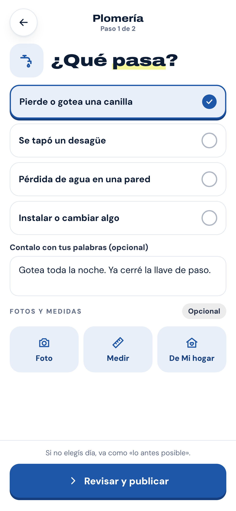
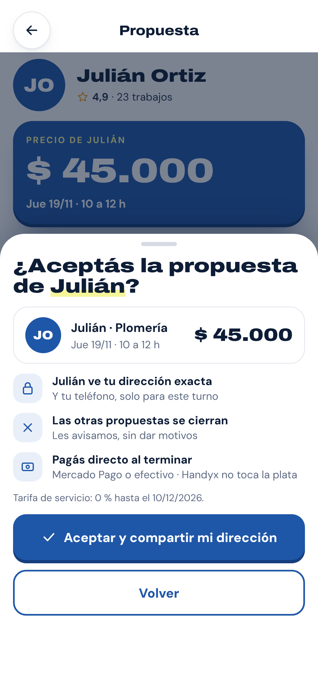
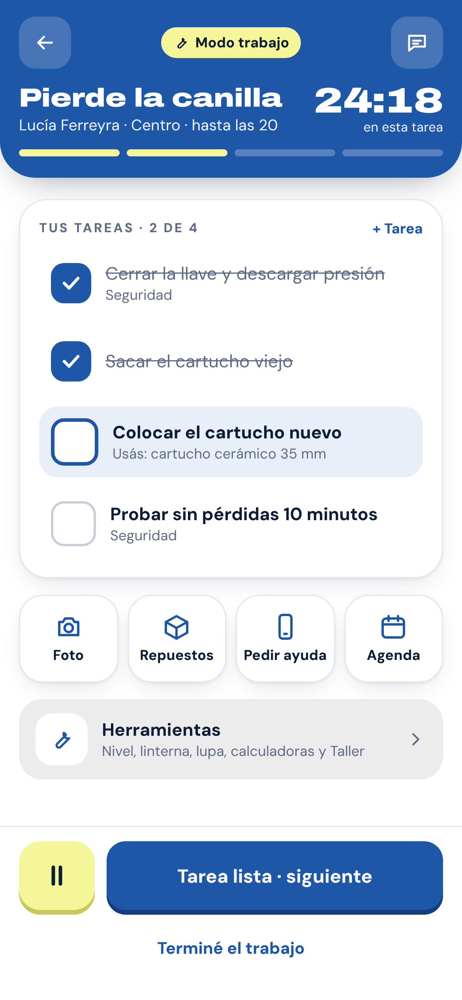
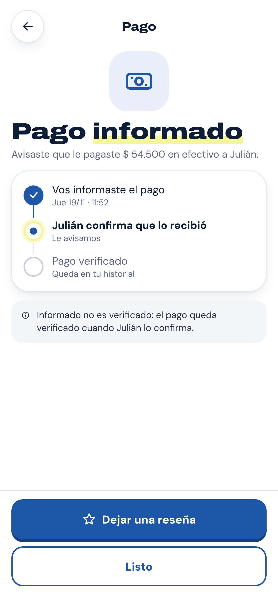

Cada función dice en qué estado está al 07/11/2026, cada imagen de dónde sale y cada cifra qué tipo de dato es. Todo ingreso de Handyx es bruto, antes de costos: nunca una ganancia.
Estado de cada función
ConstruidoEn la rama principal, probado contra el servidor real (en local, si todavía no está desplegado).En pruebasHay código, pero corre con datos de prueba o en una rama.DiseñadoDibujado en los lienzos de diseño, todavía sin código.ConceptoIdea a futuro, sin diseño completo.
Rótulo de cada imagen
Diseño propuestoPantalla del lienzo de diseño.Datos de pruebaPantalla real de la app o del portal, con datos de prueba.Muestra · datos ficticiosNombres y cifras inventados para mostrar la pantalla.ConceptoAlgo que todavía no existe.
Tipo de cada cifra
Dato verificadoComprobado contra la fuente.Dato informadoLo informa el fundador; sin auditar.Supuesto · proyecciónUn supuesto a validar y lo que se calcula con él.ObjetivoUna meta, no un resultado.Decisión del fundadorUna regla ya decidida, con su fecha.En evaluaciónUna regla propuesta, todavía sin aprobar.Ejemplo ilustrativoUna cuenta para explicar; no es un caso real.
Handyx en una línea. Un marketplace de servicios del hogar que nace en Mar del Plata: conecta a quien necesita un
arreglo con especialistas de su zona, con propuestas claras para elegir por calidad y por precio. Soluciones, no problemas.
Handyx · Business & Investment00
01 · Resumen ejecutivoHandyx · Business & Investment
01Resumen ejecutivo
Un producto en pruebas y un pedido concreto
Handyx es un marketplace de servicios del hogar que nace en Mar del Plata. Conecta a quien necesita un arreglo con especialistas independientes de su zona: quien pide recibe propuestas con precio y elige; el especialista pone su precio y cobra directo.
6
rubros para empezar: electricidad, plomería, gas, cerrajería, albañilería y aire acondicionado
Dato verificado
284
funciones relevadas en las tres superficies, cada una con su estado
45 construidas94 en pruebas116 diseñadas29 en concepto
Dato verificado
Nov. 2026
Noviembre de 2026: demo cerrada con invitación; lanzamiento abierto después, fecha a confirmar
Objetivo
USD 100.000
de inversión buscada, con un reparto propuesto a aprobar (p. 16)
Objetivo
La oportunidad
Contratar un arreglo todavía pasa por conocidos, grupos de mensajería y presupuestos difíciles de comparar; del otro lado, los especialistas trabajan con herramientas sueltas. Empezamos por Mar del Plata y seis rubros: un mercado que podemos medir barrio por barrio antes de pensar en otra ciudad.
Dónde estamos
La landing está publicada desde el 29/10/2026. El 07/11 publicamos el portal interno y las dos apps, en vista de prueba con datos ficticios. Ningún backend está desplegado: hoy nadie puede pedir ni cobrar un trabajo real a través de Handyx.
LandingConstruidoPortal internoConstruidoLas dos appsEn pruebasBackendsEn pruebas
El modelo
Al especialista, sin comisión: cobra su precio completo, directo de quien lo contrata. Decisión del fundador · 07/11/2026
Quien pide: 0 % hasta el 10/12/2026Decisión del fundador · 07/11/2026
Después, 15 % sobre el precio del especialista, en evaluación. En evaluación
Qué buscamos
Financiar la etapa de validación en Mar del Plata —marketing, operación, tecnología y legal— con un reparto propuesto a aprobar y un primer control en diciembre de 2026 (p. 16). Instrumento, plazo y valuación: [a definir].
Estado al 07/11/2026. 6 rubros: rubros de la landing y de las apps (corte 04/11). 284 funciones: auditoría de las tres superficies del 07/11/2026, sobre los lienzos de diseño y los repos de producto. Calendario: decisión del fundador del 07/11/2026. Inversión: objetivo del fundador para la presentación de ATICMA (04/11); no está recibida. Tarifa: decisión del fundador del 07/11/2026.
Handyx · Business & Investment00
02 · El problemaHandyx · Business & Investment
02El problema
Arreglar algo en casa todavía es una odisea
Seis dolores, de los dos lados del arreglo. Son hipótesis de producto, armadas en conversaciones con vecinos y especialistas: el piloto las confirma o las descarta.
Quien necesita un arreglo
Se rompe algoUna pérdida, un enchufe, una cerradura.
Pregunta a conocidosY en los grupos del barrio o del edificio.16
EsperaLas respuestas llegan de a una; el precio, al final.2
Compara a ojoPresupuestos con formatos y alcances distintos.3
Coordina por mensajesDía, llegada, materiales y pago, sueltos.4
No queda registroNi de lo hecho ni de la garantía.24
Quien hace el arreglo
Espera que lo recomiendenEl trabajo llega por conocidos y grupos.6
Presupuesta a manoCada vez desde cero, con precios de memoria.5
Agenda en la cabezaTurnos, viajes y materiales, en el teléfono o en papel.45
Cobra sin historialLo cobrado no queda ordenado en ningún lado.4
No tiene cómo mostrarseUn trabajo bien hecho no queda a la vista de nuevos clientes.1
Dolor (hipótesis)
Quién lo vive
Señal que vamos a medir en el piloto
1Encontrar a alguien confiable
Quien pide
Pedidos con propuestas de especialistas revisados por el equipo
2Falta de transparencia
Quien pide
Trabajos cerrados al precio aceptado o con adicionales aprobados en la app
3Presupuestos difíciles de comparar
Quien pide
Pedidos en los que se comparan dos o más propuestas
4Desorganización
Los dos
Trabajos coordinados de punta a punta dentro de la app
5Falta de herramientas profesionales
Especialista
Especialistas que presupuestan y agendan con la app
6Oferta fragmentada
Los dos
Especialistas disponibles por rubro y por barrio
Tres preguntas que el piloto tiene que responder
¿Cuántas propuestas recibe un pedido, y en cuánto tiempo?Sin ese dato no prometemos plazos: el horario lo declara cada especialista.
¿Quien pide elige por precio, por perfil o por las dos cosas?Define qué mostrar primero en cada propuesta y qué conviene medir.
¿Quien contrató una vez vuelve a contratar dentro de Handyx?Es la prueba de que el valor queda adentro y no se arregla por fuera.
Estado al 07/11/2026. Hipótesis cualitativas del equipo, a partir de conversaciones con vecinos y especialistas informadas por el fundador: sin número auditado ni muestra estadística. No citamos estadísticas de mercado porque todavía no hay fuentes propias para Mar del Plata; la investigación propuesta está en la p. 8.
Handyx · Business & Investment00
03 · Nuestra soluciónHandyx · Business & Investment
03Nuestra solución
Más claro para quien pide y para quien trabaja
Handyx ordena el arreglo de punta a punta. Quien pide cuenta qué pasa y elige entre propuestas con precio; el especialista recibe pedidos de su zona y trabaja con herramientas para su oficio; el equipo acompaña desde el portal.
Para quien pide
Customer App
Diseño propuestoMuestra · datos ficticios
Contar qué pasa, en pocos pasosEn pruebas
Pedido en 3 toques, con precio orientativoDiseñado
Propuestas lado a lado, sin rankingEn pruebas
Pago directo al especialistaEn pruebas
Para el especialista
Professional App
Diseño propuestoMuestra · datos ficticios
Pedidos de su zona, sin obligación de aceptarEn pruebas
Su precio, con una sugerencia que no imponeEn pruebas
Presupuestador con lista de precios propiaDiseñado
Modo trabajo e informe con garantíaDiseñado
Para el equipo de Handyx
Operations Portal
Esquema · módulos del portal v2
Portal interno
Inicio
Pre-registros
Especialistas
Reclamos
Campañas
Cohortes
Mapa
Tareas
Docs
Legal
Preregistros con etapas y contacto guiadoConstruido
Reclamos con plazos por gravedadConstruido
Campañas con QR, cohortes y mapaConstruido
Lo que pasa en las apps, en el portalConcepto
Sin comisión al especialistaCobra su precio completo; Handyx cobra una tarifa de servicio a quien pide.
Handyx sugiere, nunca imponeEl precio lo pone cada especialista; la app muestra un rango de referencia.
La plata del trabajo no pasa por HandyxQuien pide paga directo al especialista, en efectivo o con Mercado Pago.
Estado al 07/11/2026. En pruebas: código en las apps con el servidor simulado (vista de prueba publicada el 07/11) o en ramas. Diseñado: lienzos «App del usuario» y «App del especialista». Construido: portal interno v2, publicado y sin datos reales. Detalle de cada superficie: Dossiers 02, 03 y 04.
Handyx · Business & Investment00
05 · El ecosistema HandyxHandyx · Business & Investment
05El ecosistema Handyx
Tres superficies para un mismo arreglo
Dos apps, una para cada lado del arreglo, y un portal para el equipo. Las apps comparten una misma base de datos; el portal hoy trabaja con lo que llega desde la landing.
Quien necesita un arreglo
Especialista
Pago directo del trabajo, en efectivo o con Mercado Pago: el dinero no pasa por Handyx
Dossier 02
Customer App
Para quien necesita un arreglo: pide, compara propuestas, sigue el trabajo y paga directo.
En pruebashandyx.pro · vista de prueba
Base común de las apps
Las API del usuario y del especialista comparten un contrato de datos: pedidos, propuestas, turnos, chat y pagos informados.
En pruebasen ramas, sin desplegar
Dossier 03
Professional App
Para el especialista: pedidos de su zona, su precio, su agenda y su trabajo, con cobro directo.
En pruebasworkers.handyx.pro · vista de prueba
Pendiente de conectar con el portal: pedidos, pagos informados, verificación y reclamos de las appsConcepto
Landing pública
Presenta Handyx y su demo; lista de espera y preregistro de especialistas, con el formulario cerrado hasta el aviso de privacidad definitivo.
Construidolanding.handyc.com
Captación y CRM
Guarda los preregistros cifrados, las campañas, los reclamos y las métricas agregadas.
En pruebascompleto, sin desplegar
Dossier 04
Operations Portal
El equipo ordena preregistros, reclamos, campañas, cohortes y el mapa por barrio.
Construidosolo para el equipo
Qué ya está conectado
Lo que alguien deja en la landing llega cifrado al backend de captación y el equipo lo trabaja desde el portal, probado en local. Las dos apps comparten su base de datos y su contrato.
Qué falta conectar
Lo que pasa en las apps —pedidos, propuestas, pagos informados, verificación y reclamos— todavía no llega al portal. Esa conexión es el próximo tramo del roadmap operativo (Dossier 04).
Estado al 07/11/2026. Repos de producto (rama principal y ramas activas) y publicaciones del 29/10 y del 07/11/2026; ningún backend está desplegado. Línea punteada: lo que todavía no está conectado. Dominios actuales de cada superficie; el portal es de uso interno. Descripción por capacidades, sin mecanismos ni proveedores.
Handyx · Business & Investment00
05 · El ecosistema, de punta a puntaHandyx · Business & Investment
05El ecosistema, de punta a punta
Así se resuelve un arreglo de punta a punta
Cinco momentos de un mismo trabajo, en las dos apps. Cada paso dice qué parte ya tiene código y qué parte es todavía diseño.
Diseño propuesto · datos ficticios
1
Pide
Customer App

Elige el rubro, cuenta qué pasa y publica el pedido.
Pedido en pasosEn pruebasEn 3 toquesDiseñado
2
Propone
Professional App
Pone su precio, el día y el horario; Handyx sugiere un rango.
Precio, día y horarioEn pruebas
3
Elige
Customer App

Compara las propuestas y acepta exactamente la que vio.
Comparar y aceptarEn pruebas
4
Trabaja
Professional App

Llega, trabaja con su lista de tareas y cierra el trabajo.
Turno, viaje y cierreEn pruebasModo trabajoDiseñado
5
Paga directo
Customer App

Paga al especialista; la app registra el pago informado.
Pago directo informadoEn pruebas
6
Handyx acompaña · Operations Portal
Hoy el portal trabaja con preregistros, reclamos y campañas. Lo que pasa en las apps todavía no llega: esa conexión está planificada.
Preregistros y reclamosConstruidoDatos de las appsConcepto
Necesidad
Se rompió algo en casa y no sabe a quién llamar ni cuánto debería costar.
Acción
Cuenta qué pasa, compara propuestas con precio, elige y sigue el trabajo desde la app.
Qué hace Handyx
Avisa a especialistas del rubro y la zona, muestra las propuestas por orden de llegada y registra el pago informado, sin tocar la plata.
Resultado
Un trabajo hecho y pagado directo al especialista, con lo acordado por escrito en la app.
Estado al 07/11/2026. Pantallas de los lienzos de diseño, con nombres y montos ficticios. En pruebas: código de las apps con el servidor simulado o en ramas. Diseñado: solo en los lienzos. Concepto: la conexión de las apps con el portal. Informado no es verificado: el pago queda verificado cuando el especialista lo confirma.
Handyx · Business & Investment00
06 · Mercado y oportunidadHandyx · Business & Investment
06Mercado y oportunidad
Empezamos por un mercado que podemos medir
Mar del Plata es el mercado inicial: una ciudad grande, con barrios bien definidos y seis rubros de arreglos que toda casa necesita alguna vez.
Hoy el tamaño del mercado es una estimación abajo-arriba con supuestos. El primer trabajo de Handyx es reemplazar cada supuesto por un dato propio: cuántos arreglos pide un hogar por año, cuánto cuesta cada uno y por qué canal se contrata.
Por eso el plan de crecimiento no fija cuotas de mercado: consolida Mar del Plata, mide, y recién después replica el modelo en otras ciudades.
INDEC: hogares por partido (Censo 2022) y gasto en mantenimiento de la vivienda (ENGHo)
Mercado accesible
Ciudades medianas con un perfil parecido al de Mar del Plata
[a investigar]
Las mismas fuentes por ciudad y el volumen de búsquedas locales por rubro
Mercado objetivo inicial
Mar del Plata, seis rubros
≈ USD 10,4 M/año
Frecuencia y ticket medidos en la app y una encuesta corta por barrio
Estado al 07/11/2026. Fuentes: 259.623 · Censo 2022 (INDEC), aportado por el fundador; La Capital lo publica como viviendas particulares ocupadas, así que la unidad está a confirmar. Arreglos por hogar y ticket · supuestos a validar con datos propios. Proyección = 259.623 × 1 × USD 40 (MERCADO-USD). Corte 04/11/2026.
Handyx · Business & Investment00
07 · Modelo de negocioHandyx · Business & Investment
07Modelo de negocio
Sin comisión al especialista, una tarifa de servicio para quien pide
El especialista pone su precio y lo cobra completo, directo del cliente. Handyx se financia con una tarifa de servicio que paga quien pide el arreglo.
Confirmada
Desde el lanzamiento
Al especialista: sin comisión. Cobra el 100 % de su precio.
Al usuario: 0 % de tarifa de servicio hasta el 10/12/2026.
El pago del trabajo va directo al especialista: efectivo o Mercado Pago.
En evaluación
Desde el 10/12/2026
Tarifa de servicio del 15 % para el usuario, sobre el precio del especialista.
Cómo se cobra: en evaluación. Todavía no está implementado.
Futuras · concepto
Oportunidades
Handyx Business: empresas, consorcios y administraciones.
Ferreterías adheridas: materiales para el especialista.
Más rubros y herramientas para profesionales.
Cómo circula el dinero
Usuariopide el arreglo
Precio del especialista, directo efectivo o Mercado Pago · no pasa por Handyx
Especialistacobra su precio completo
Usuario
Tarifa de servicio (desde el 10/12) mecanismo de cobro en evaluación
Handyxingreso bruto
Ejemplo ilustrativo · desde el 10/12/2026
Precio del especialista$ 100.000Tarifa de servicio (15 %, en evaluación)$ 15.000Paga el usuario$ 115.000Recibe el especialista$ 100.000Ingreso bruto de Handyx, antes de costos$ 15.000
El especialista nunca resigna parte de su precio. El valor de Handyx se cobra como servicio.
Estado al 07/11/2026. Fuentes: decisión del fundador (07/11/2026); apps publicadas el 07/11/2026 con tarifa 0 % hasta el 10/12/2026. Tipo: confirmada · en evaluación · concepto. El ejemplo es ilustrativo (EJ-P, EJ-F, EJ-T), no un trabajo real; montos en pesos argentinos; ingreso bruto, antes de costos.
Handyx · Business & Investment00
08 · Competencia y diferenciaciónHandyx · Business & Investment
08Competencia y diferenciación
Cada alternativa cobra de una forma distinta
La competencia más común no es una app: son los conocidos y los grupos del barrio. Entre las plataformas, la diferencia más visible es quién paga y cómo.
Por modelo de cobro
Datos públicos consultados el 02–04/11 · a revalidar
Modelo de cobro
Qué paga el especialista
Ejemplos que usa el pitch
Dónde
Sin plataforma
Nada a terceros: depende de que lo recomienden
Conocidos, grupos de mensajería y redes del barrio
En todas partes
Comisión sobre el trabajo
Un porcentaje de cada trabajo; a veces, también un cargo al usuario
Clickie (hasta 15 % al profesional) · Taskrabbit
Argentina · EE. UU.
Pago por contacto u oportunidad
Paga por acceder a cada pedido, lo gane o no
Home Solution · Thumbtack · Angi
Argentina · EE. UU.
Suscripción
Una cuota periódica para aparecer
Checkatrade
Reino Unido
Comisión cero por un tiempo
Nada mientras dure la promoción anunciada
Muovi
Argentina
Otros enfoques
Foco en empresas o en servicio doméstico, o modelo sin confirmar
IguanaFix · Zolvers · Servidos · Yo te lo arreglo · Ay Fix · GoFixii
Argentina · México · Colombia
Handyx
Nada: cobra su precio completo. Quien pide paga una tarifa de servicio
0 % hasta el 10/12/2026; después, 15 % en evaluación (p. 9)
Mar del Plata
Lo que buscamos que nos diferencie
Sin comisión al especialista
Cobra su precio completo y Handyx se financia con una tarifa de servicio. Es fácil de copiar: no lo presentamos como barrera.
Una herramienta de trabajo, no solo un canal
Presupuestador, agenda, modo trabajo y herramientas por oficio: diseñados, con Electricidad en pruebas.
Densidad local y confianza acumulada
Especialistas revisados por el equipo, historial y garantías dentro de la app, barrio por barrio. Es una hipótesis: la mide el piloto.
Lo que puede salir mal
Que el siguiente arreglo se cierre por fuera. Nada lo impide del todo; lo medimos como repetición dentro de Handyx.
Que el modelo se copie. La ventaja que buscamos es local y se acumula con el uso; hoy no es una barrera probada.
Estado al 07/11/2026. Datos públicos (prensa, sitios propios y comparadores) consultados por el equipo entre el 02 y el 04/11/2026, sin revalidar en los sitios oficiales: pueden haber cambiado. Clickie: COMP-CLICKIE-PRO (dato público sin verificar). Nombres sin logos. Diferenciación y riesgos: hipótesis del equipo, no ventajas demostradas.
Handyx · Business & Investment00
09 · Adquisición y marketingHandyx · Business & Investment
09Adquisición y marketing
Dos ejes de captación, medidos por barrio
Lo digital trae volumen; lo físico, confianza y pedidos de la misma zona. Hoy todo es estrategia prevista: nada está en ejecución ni medido todavía.
Digital
Previsto · En ejecución · Medido
Anuncios por barrio y por urgenciaPrevisto
Instagram y Facebook, con un enlace por pieza y por barrio.
Búsqueda localPrevisto
Google: ficha local y una landing por rubro para pedidos con intención.
Contenido audiovisual cortoPrevisto
Problemas concretos —una pérdida, un enchufe— con los personajes de la marca.
Captación por oficioPrevisto
Mensajes separados para quien pide y para el especialista, por rubro.
ReferidosPrevisto
Una propuesta con costo, reglas y control de abuso; nada prometido.
Remarketing, posicionamiento orgánico y TikTokSin plan
Todavía sin plan documentado: [a definir].
Físico
Previsto · En ejecución · Medido
Porteros y administradores de edificiosPrevisto
Canal usado en la prueba de octubre (dato informado, p. 17); falta llevarlo a escala.
Volante por barrio con su QRPrevisto
Un QR por barrio y por pieza, para saber qué funciona y dónde.
Comercios del barrio y ferreteríasPrevisto
Cartel con QR propio. Solo llamamos aliado a quien acepta por escrito.
Carteles y volantes en la callePrevisto
Postes y locales de los barrios donde ya hay oferta de especialistas.
Acciones con especialistasPrevisto
Remeras con el personaje de su oficio y contacto uno a uno desde el CRM.
Materiales impresos con QRPrevisto
Como este dossier: cada pieza con un enlace propio y medible.
Dos bucles que buscamos activar
Hipótesis · sin medir
Vecinos
Trabajo bien hecho
Reseña o consejo
Otro pedido en la zona
Más trabajo en el barrio
Comercios del barrio
Comercio que colabora
Pedido con su QR
Arreglo resuelto
Vuelve a recomendar
Construido
La medición ya tiene dónde vivir. El portal registra campañas con enlaces y QR, cohortes y el mapa por barrio; falta que la landing guarde el origen de cada registro. La pauta decidida es de USD 100 por mes Dato informado, y cada acción se mide con las métricas de la p. 12.
Estado al 07/11/2026. Estrategia de marketing, bucles de crecimiento y backlog de experimentos del equipo (31/10); pauta mensual informada por el fundador (COSTO-MARKETING, 04/11; confirmada el 07/11). Ninguna alianza firmada. Prueba con porteros: dato informado por el fundador, sin auditar. Herramienta de campañas: portal interno v2.
Handyx · Business & Investment00
09 · Cómo lo medimosHandyx · Business & Investment
09Cómo lo medimos
El costo se mide contra trabajos completados
Un registro no es un cliente. Cada métrica se calcula sobre lo que importa —trabajos completados y clientes que vuelven— y dice de dónde sale el dato.
Registrolanding
Primer pedidoapp del usuario
Propuesta aceptadalas dos apps
Trabajo completadolas dos apps
Repeticiónapps y portal
Costo por registroCAC · costo por trabajo completadoFrecuencia y retenciónConversión por etapa: cuántos pasan de cada etapa a la siguiente · hoy, sin dato en ninguna
Métrica
Cómo se calcula
Hoy
Costo por registro
Gasto de una pieza o campaña ÷ registros que trae, por público
Sin dato
Conversión por etapa
Quienes llegan a una etapa ÷ quienes llegaron a la anterior
Sin dato
CAC
Gasto de captación ÷ clientes nuevos con su primer trabajo completado
Techo USD 6 · a medir
Costo por trabajo completado
Gasto de captación ÷ trabajos completados en el período
Sin dato
Frecuencia de contratación
Trabajos por cliente por año
1 por año Supuesto
Retención
Clientes que vuelven a contratar dentro de Handyx, por cohorte
5 en diciembre Objetivo
Techo de CAC
USD 6
Lo máximo que puede costar traer a un cliente para que su primer trabajo lo pague: la tarifa del 15 % sobre un ticket supuesto de USD 40.
Proyección · a medir
≈ USD 2
Estimación con la pauta de USD 100 por mes y 50 clientes nuevos por mes, que todavía no se midieron.
Supuesto
Seis experimentos, con el umbral para seguir o cortar definido antes de ver datos
Id
Experimento
Eje
Métrica principal
Estado
F1
Volante por barrio con su QR
Físico
Registros por cada tanda de volantes
Previsto
F2
Comercio del barrio con cartel y QR
Físico
Pedidos trazables por comercio
Previsto
D1
Videos cortos con los personajes
Digital
Costo por registro
Previsto
D2
Búsqueda local por rubro
Digital
Pedidos por semana
Previsto
A1
Bienvenida con un pedido de ejemplo
Activación
Registrados que hacen su primer pedido
Previsto
R1
Pedir la reseña al cerrar el trabajo
Recomendación
Trabajos con reseña o recomendación
Previsto
Estado al 07/11/2026. Definiciones: modelo económico y estrategia de growth del equipo (31/10). CAC-MAXIMO: 15 % × USD 40 (proyección; la tarifa del 15 % está en evaluación). CAC-ESTIMADO: USD 100 ÷ 50 clientes por mes (supuesto). META-REPETIDORES: objetivo. Ninguna métrica está medida: todavía no hay operación real.
Handyx · Business & Investment00
10 · Crecimiento por etapasHandyx · Business & Investment
10Crecimiento por etapas
Consolidar Mar del Plata antes de replicar
Cuatro etapas, sin fechas comprometidas. Se pasa a la siguiente solo cuando se cumple la condición de la anterior, y cada trimestre se revisa en qué etapa estamos.
PróximaEtapa 1Lanzar y validar
Etapa 2Consolidar Mar del Plata
Etapa 3Replicar en una ciudad parecida
Etapa 4Ampliar la oferta
ObjetivoQue los primeros pedidos reales se completen dentro de Handyx.Densidad por barrio y por rubro, con clientes que vuelven.Probar que el método funciona fuera de Mar del Plata.Más rubros y nuevas líneas de negocio.AccionesDesplegar los backends, abrir el registro con el aviso de privacidad definitivo y sumar especialistas por rubro y barrio.Porteros y administradores, comercios con QR, verificación y soporte a cargo del equipo.Llevar la captación por barrio, la verificación y el soporte a una ciudad de perfil parecido.Herramientas por oficio, Handyx Business y ferreterías adheridas, hoy conceptos.RecursosEl equipo actual y la pauta de USD 100 por mes Dato informadoLa inversión buscada: marketing y operaciones (p. 16).Operación local: [a definir][a definir]IndicadoresTrabajos completados, propuestas por pedido y costo por registro.Repetición, cobertura por barrio y rubro, contribución por trabajo.Los de las etapas 1 y 2, en la ciudad nueva.[a definir]Hito50 trabajos con tarifa y 5 clientes que repiten en diciembre de 2026 Objetivo[a definir][a definir][a definir]Condición para pasarHito cumplido y CAC medido por debajo del techo de USD 6.Densidad, repetición y contribución positiva en Mar del Plata.La ciudad nueva alcanza los indicadores de Mar del Plata.Se define con los datos de las etapas anteriores.
Revisión trimestral. Al cierre de cada trimestre se revisa la condición de la etapa en curso. Si no se cumple, se sigue en la misma etapa: se avanza por resultados, no por calendario.
Lo que no vamos a hacer. Abrir otra ciudad antes de que Mar del Plata cumpla su condición: sin densidad ni repetición, una ciudad nueva multiplica el problema.
Estado al 07/11/2026. Etapas y condiciones: propuesta del equipo a partir del plan del pitch, sin sus fechas ni sus metas de cuota. Hito de la etapa 1: META-TRABAJOS y META-REPETIDORES (objetivo). Pauta: COSTO-MARKETING (dato informado). Techo de CAC: CAC-MAXIMO (proyección).
Handyx · Business & Investment00
11 · RoadmapHandyx · Business & Investment
11Roadmap
Separamos lo construido de lo planificado
Seis frentes, tres columnas y ninguna fecha comprometida. En pruebas hay código que todavía no usa gente real; lo planificado dice si está diseñado o si es un concepto.
Construido
En pruebas
Planificado
Producto
Landing con demo interactiva, publicada el 29/10
Portal interno v2, publicado el 07/11
App del usuario y app del especialista, en vista de prueba desde el 07/11
Backend de captación y CRM, completo y sin desplegar
API de las apps, Taller de Electricidad y HandIA, en ramas
Pedido en 3 toques, presupuestador, modo trabajo, Mi hogar y portal v3 Diseñado
Herramientas de plomería, gas, aire, albañilería y cerrajería Concepto
Operaciones
CRM de preregistros y reclamos con plazos por gravedad
Registro de actividad del equipo
Alta de especialistas con revisión del equipo
Legajos, tareas y legal, con datos de muestra
Soporte atendido por personas
Pedidos, pagos informados y reclamos de las apps en el portal Concepto
Comercial
Nada todavía
Tarifa 0 % hasta el 10/12 en las apps
Pago directo en efectivo, informado
Pago con Mercado Pago al especialista
Tarifa de servicio del 15 % desde el 10/12 En evaluación
Handyx Business Concepto
Marketing
Campañas con enlaces y QR, cohortes y mapa por barrio, en el portal
Registro de la landing, cerrado hasta el aviso de privacidad definitivo
Anuncios por barrio, búsqueda local, volantes y comercios con QR (p. 11)
Expansión
Nada todavía
Nada todavía
Consolidar Mar del Plata, después una ciudad de perfil parecido y más rubros (p. 13)
Alianzas
Ninguna firmada
Porteros y administradores de edificios: prueba informada en octubre
Ferreterías adheridas: app y panel del ferretero Diseñado
El orden de lo que sigue, sin fechas
1
Desplegar los backendsCaptación y las API de las dos apps.
2
Abrir el registroCon el aviso de privacidad definitivo.
3
Primeros trabajos realesEn Mar del Plata, con la tarifa decidida.
4
Conectar apps y portalPedidos, pagos y reclamos a la vista.
5
Herramientas por oficioDespués del lanzamiento.
Estado al 07/11/2026. Auditoría de las tres superficies y de los siete repos de producto (rama principal y ramas activas), con las publicaciones del 29/10 y del 07/11/2026. Prueba con porteros: dato informado por el fundador, sin auditar. Tarifa del 15 %: en evaluación, sin política aprobada ni implementación.
Handyx · Business & Investment00
12 · Proyecciones financierasHandyx · Business & Investment
12Proyecciones financieras
Proyectamos con variables, no con promesas
Ninguna variable del modelo está medida todavía. Mostramos los supuestos con su valor y una sola proyección, con su fórmula; los escenarios esperan los datos del piloto.
El punto de equilibrio, en una cuenta
USD 400
por mes de costos actuales estimados, sin sueldos
Dato informado
÷
USD 6
de ingreso bruto por trabajo: 15 % de un ticket supuesto de USD 40
Proyección
=
≈ 67
trabajos por mes para cubrir los costos actuales
Proyección
Con los costos de cobro, soporte e impuestos el número sube: el equilibrio real se calcula con la contribución por trabajo, todavía sin medir.
Variable
Estado del dato
Valor de trabajo
Cómo se va a medir
Profesionales activos
Sin medir
Sin dato: registrados no son activos
Revisados y disponibles, por rubro y barrio
Clientes activos
Sin medir
Sin dato
Con un trabajo completado en el período
Trabajos completados
Sin medir
Sin dato
Con la conformidad de quien pidió
Ticket promedio
Supuesto
USD 40 por arreglo
Precio del especialista, por trabajo
Ingreso por operación
Proyección
USD 6 por trabajo, bruto, antes de costos
Tarifa cobrada en cada trabajo
Costo de adquisición
Supuesto
≈ USD 2; techo de USD 6, a medir (p. 12)
Captación ÷ primeros trabajos completados
Costos operativos
Dato informado
USD 400 por mes, sin sueldos
Gastos reales de cada mes
Costos tecnológicos
Dato informado
Servidores USD 100 y desarrollo USD 200 por mes
Facturas de cada servicio
Margen
Sin medir
[a definir]: faltan cobro, soporte e impuestos
Ingreso bruto menos costos variables
Flujo de caja
Sin medir
[a definir]: sin caja propia informada
Ingresos menos egresos del mes
ConservadorPendiente de datos medidos
BasePendiente de datos medidos
AmbiciosoPendiente de datos medidos
Ingreso bruto no es ganancia.La tarifa de servicio es ingreso bruto de Handyx, antes de costos de cobro, impuestos, soporte y sueldos.
Estado al 07/11/2026. COSTOS-MES (servidores 100, desarrollo 200 y marketing 100; dato informado por el fundador, 04/11). INGRESO-POR-TRABAJO y EQUILIBRIO-TRABAJOS: proyección, 400 ÷ 6 = 66,7. SUP-TICKET-USD y CAC-ESTIMADO: supuestos. Tarifa del 15 %: en evaluación. Los escenarios se arman con captación, aceptación, ticket, repetición y cobertura medidos en el piloto.
Handyx · Business & Investment00
13 · Inversión y uso del capitalHandyx · Business & Investment
13Inversión y uso del capital
Una inversión atada a hitos medibles
USD 100.000
Inversión buscada para la etapa de validación en Mar del Plata. No está recibida.
Objetivo
El monto es un objetivo y el reparto, una propuesta del 05/11 que todavía hay que aprobar. Cada partida se rinde contra el objetivo de diciembre de 2026.
Reparto propuesto
Supuesto · propuesta a aprobar (05/11)
USD 45.000USD 30.000USD 15.000USD 10.000
MarketingOperacionesTecnologíaLegal y reserva
Partida
USD
Detalle
Qué destraba
Marketing
45.000
Anuncios 20.000 · porteros y administradores 10.000 · remeras y contenido con los personajes 8.000 · calle 7.000
Pedidos en barrios con oferta, con el CAC bajo el techo
Especialista revisado, soporte y cobro en cada trabajo
Tecnología
15.000
IA 6.000 · herramientas por oficio 5.000 · servidores 4.000
Apps en producción y herramientas que hacen volver
Legal y reserva
10.000
Legal y contable 6.000 · reserva 4.000
Una política aprobada para cobrar la tarifa
Total
100.000
Hito común: 50 trabajos con tarifa y 5 clientes que repiten en diciembre de 2026 Objetivo
Las categorías del pedido, en la propuesta
Desarrollo tecnológico (IA y herramientas)USD 11.000Producto y experiencia de usuariosin asignación en la propuestaMarketing y adquisiciónUSD 45.000OperacionesUSD 30.000Equiposin asignación en la propuestaInfraestructura (servidores)USD 4.000Expansiónsin asignación en la propuestaLegal y reserva (fuera de las categorías)USD 10.000
Condiciones
Instrumento[a definir]
Plazo[a definir]
Valuación[a definir]
No fijamos valuación ni porcentaje: el instrumento se conversa, idealmente con los datos del piloto.
Estado al 07/11/2026. INVERSION-BUSCADA e INV-TOTAL: objetivo del fundador (04/11), no recibido. Reparto: INV-MARKETING, INV-OPERACIONES, INV-TECNOLOGIA e INV-LEGAL, con su detalle INV-M-*, INV-O-*, INV-T-* e INV-L-* (supuestos; propuesta a aprobar del 05/11). Hito: META-TRABAJOS y META-REPETIDORES. Montos en dólares estadounidenses.
Handyx · Business & Investment00
14 · Avance y validaciónHandyx · Business & Investment
14Avance y validación
Avances reales, cada uno con su respaldo
Separamos lo que se puede comprobar en los repos y en las publicaciones de lo que informa el fundador y todavía no está auditado.
Dato verificado
Publicado, con fecha
Landing con demo interactivalanding.handyc.com · registro todavía cerrado
Portal internode uso del equipo, sin datos reales
App del usuariovista de prueba con datos ficticios
App del especialistavista de prueba con datos ficticios
Dato informado por el fundador · sin auditar
Probado a mano
5
trabajos de prueba
$ 350.000
en total
Prueba con porteros de edificios en octubre de 2026, coordinada a mano y sin la app. El monto es el precio de los especialistas; los comprobantes están en conciliación.
Dato informado por el fundador · sin auditar
Especialistas registrados
56
especialistas registrados
Registrados no quiere decir verificados ni activos: la verificación de identidad y antecedentes está a cargo del equipo y se hace antes de que un especialista reciba pedidos.
Objetivo
Próximo hito · diciembre de 2026
50
trabajos con tarifa
5
clientes que repiten
Antes: desplegar los backends y abrir el registro de la landing con el aviso de privacidad definitivo.
Dato verificado
7
repos de producto, uno por pieza del ecosistema
Pruebas automáticas por repo
Captación y CRM291Captación, con base de datos86App del usuario59App del especialista61
CI en verdeFormato, tipos, pruebas y compilación corren en cada cambio. Las API de las apps se prueban en sus ramas, contra una base local.
Estado al 07/11/2026. Publicaciones: ejecuciones de despliegue del 29/10 y del 07/11/2026. Pruebas y CI: último estado de cada repo. TRABAJOS-INFORMADOS, PRUEBA-MONTO y ESP-REGISTRADOS: datos informados por el fundador (corte 04/11), sin auditar. META-TRABAJOS y META-REPETIDORES: objetivo de diciembre de 2026.
Handyx · Business & Investment00
15 · Visión a futuroHandyx · Business & Investment
15Visión a futuro
La forma más simple de resolver los arreglos de una casa
Queremos que pedir un arreglo sea tan simple como contar qué pasa, y que trabajar con Handyx haga crecer a cada especialista. Soluciones, no problemas.
La escala a la que apuntamos
USD 1 M
en trabajos hechos a través de Handyx, con un horizonte supuesto de 12 meses
Objetivo
USD 5 M
de ingresos brutos anuales a fines de 2027, antes de costos, con particulares y empresas
Objetivo
40 %
de los servicios del hogar que contratan los particulares en la Argentina, a fines de 2027
Objetivo · sin metodología
Son objetivos, no pronósticos ni retornos prometidos: se revisan con los datos del piloto.
Hacia dónde puede crecer
Concepto
Handyx Business
Turnos y mantenimiento para empresas, comercios, consorcios y administraciones.
Concepto
Ferreterías adheridas
Materiales para el especialista, con retiro en el mostrador. Pantallas diseñadas; sin alianzas firmadas.
Concepto
Más rubros
Los seis rubros iniciales son el punto de partida; los siguientes se eligen según la demanda medida.
Handyx se presentó en la semifinal de ATICMA Emprende 2026. No llegamos a la final; usamos lo aprendido para ordenar el producto, los números y esta documentación.
Una invitación
A los proyectos finalistas les ofrecemos, sin costo, ayuda para preparar materiales de presentación como este. Lo que aprendimos armándolos puede servirles; la invitación es abierta y sin compromiso.
16 · Equipo y contactoHandyx · Business & Investment
16Equipo y contacto
Lo que pedimos hoy es una reunión
Para recorrer el producto en vivo, revisar juntos los números de este dossier y conversar cómo encaja una inversión en la etapa que viene.
Por qué ahora
1
El producto existe. Tres superficies diseñadas de punta a punta, un portal construido y dos apps publicadas en vista de prueba, con cada función relevada y su estado a la vista.
2
La tarifa de lanzamiento está decidida. Sin comisión al especialista y una tarifa de servicio para quien pide, que arranca en cero.
3
Lo que falta es medir. El piloto en Mar del Plata convierte cada supuesto de este dossier en un dato propio. Para eso hace falta capital de captación y de operación.
Equipo
Ignacio GaunaFundador. Desarrollo, producto y coordinación.
AbigailDiseño y marketing, con dedicación parcial.
Agentes de IADesarrollo asistido, supervisado por el fundador.
Un riesgo que reconocemos: hoy Handyx depende mucho del fundador. Por eso cada módulo está documentado y la operación se apoya en procesos escritos.
Coordinemos una reunión para ver Handyx funcionando.
ContactoIgnacio Gauna, fundador
Emailignaciogauna.developer@gmail.com
Teléfono223 667-4044
Para profundizar, la colección
TrípticoHandyx en una mirada: el problema, la solución y el ecosistema.
02 Customer AppCómo pide, compara y elige quien necesita un arreglo.
03 Professional AppLa herramienta de trabajo del especialista.
04 Operations PortalCómo el equipo opera el marketplace.
Estado al 07/11/2026. Equipo según el material del proyecto. Contacto institucional decidido por el fundador el 07/11/2026. Las cifras de este dossier llevan su tipo, su fuente y su fecha de corte; ninguna es un resultado si no lo dice.
Handyx · Business & Investment00
Soluciones, no problemas.
Conocé el proyecto completo
La landing con la demo interactiva, los cuatro dossiers y el portafolio del fundador, en un solo lugar.
landing.handyc.com/handyx
LandingBusiness & InvestmentCustomer AppProfessional AppOperations PortalPortafolio del fundador
ContactoIgnacio Gauna, fundador
Emailignaciogauna.developer@gmail.com
Teléfono223 667-4044
Weblanding.handyc.com
Tríptico01 Business & Investment02 Customer App03 Professional App04 Operations Portal
Colección Handyx · Edición 1 · Mar del Plata, noviembre de 2026. Estado al 07/11/2026. Las pantallas usan datos de prueba o de muestra; las cifras llevan su tipo, su fuente y su fecha de corte. Ninguna cifra es un resultado si no lo dice.